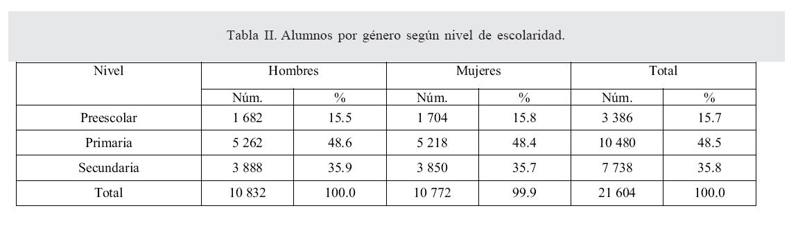

bueno esta etapa de mi vida la disfrute demasiado y creo que ahora estoy poniendo en practica lo que estudiamos en la secundaria
creo que me gustaria regresar ahi,
te llevas muchas amistades y cosas que pasaron muy divertidas
algunas cosas que hice fueron:
bailar
hacer obras
dirgir el homenaje
traducir parrafos enormes a ingles
conocer gente de otro estado
La educación secundaria, educación media, segunda enseñanza, enseñanza secundaria, enseñanza media, bachillerato, estudios medios o Centro de Formación Integral son los nombres que se dan a la siguiente etapa en la educación formal, posterior a la enseñanza primaria. En algunos países hispanohablantes se denomina educación primaria o bachillerato a los últimos cursos de la educación secundaria. Tiene como objetivo capacitar al alumno para poder iniciar estudios de educación superior. Tras la finalización de la educación secundaria, es usual optar por el mundo laboral, por una formación profesional o por estudiar en la universidad.
La educación secundaria puede ser común para todos los alumnos o diversificada en vías formativas según las salidas posteriores. Las modalidades, a la vez, pueden tener diversas especializaciones y orientaciones que permiten formarse en temas específicos.
